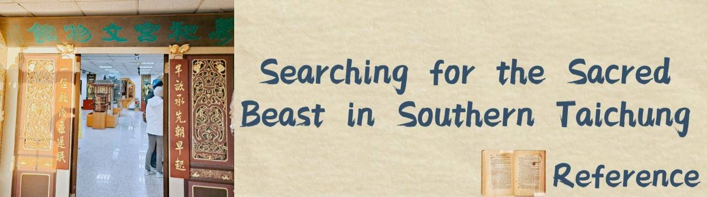

References
Internet information
The Legend of Shang-Chi and the Ten Rings - Wikipedia
https://zh.wikipedia.org/zh-tw/%E5%B0%9A%E6%B0%A3%E8%88%87%E5%8D%81%E7%92%B0%E5%82%B3%E5%A5%87
Candle Dragon, as recorded in the " Classic of Mountains and Seas" - Chinese Encyclopedia.
https://www.itsfun.com.tw/%E7%87%AD%E9%BE%8D/wiki-4969045
Dragons in the Classic of Mountains and Seas - Ying Dragon
https://kknews.cc/culture/yxavgqa.html
Dragons in the Classic of Mountains and Seas -——Kui Dragon
https://kknews.cc/culture/4382orq.html
Candle Dragons, Ying Dragons, Jiao Dragons, and Kui Dragons, it turns out that " the Classic of Mountains and Seas " contains so many types of dragons.
https://kknews.cc/news/8zzjzvn.html
"Dijiang "The Western Mountains Classic" in the second volume of " the Classic of Mountains and Seas " says - Chinese Encyclopedia Knowledge.
https://www.jendow.com.tw/wiki/%E6%B8%BE%E6%B2%8C
【GQ Science】Is "Dara" a real place? 4 worldbuilding explanations for Marvel's "Shang-Chi and the Legend of the Ten Rings"
https://www.gq.com.tw/entertainment/article/%E5%B0%9A%E6%B0%A3%E8%88%87%E5%8D%81%E7%92%B0%E5%82%B3%E5%A5%87-%E4%B8%96%E7%95%8C%E8%A7%80-%E6%BC%AB%E7%95%AB-%E7%A7%91%E6%99%AE
Talking about Phoenix from the "Classic of Mountains and Seas": How did it evolve from a bird to a divine creature?
https://ppfocus.com/hk/0/pea832e6f.html
Why did the Nine-tailed Fox become a demon fox? | Click-through 300 questions about Chinese culture | Killing Stone | Daji
https://www.epochtimes.com/b5/22/4/17/n13713903.htm
Legendary Beasts in the Classic of Mountains and Seas Part 13 (Spirit Beast: Qilin)
https://kknews.cc/history/2e633le.html
Suanni (a mythical creature in Chinese mythology) _ Baidu Encyclopedia
https://baike.baidu.hk/item/%E7%8B%BB%E7%8C%8A/1525903
I read "Classic of Mountains and Seas"
https://chiuyunju.pixnet.net/blog/post/121680620-%E6%88%91%E8%AE%80%E3%80%8A%E5%B1%B1%E6%B5%B7%E7%B6%93%E3%80%8B%28%E9%A6%96%E9%A0%81%29
"Dijiang "The Western Mountains Classic" in the second volume of " the Classic of Mountains and Seas " says - Chinese Encyclopedia
https://www.jendow.com.tw/wiki/%E6%B8%BE%E6%B2%8C
Taichung Wanhe Temple Foundation Global Information Network.
http://www.wanhegong.org.tw/
Music source:
Game
https://freesound.org/
Video
https://youtu.be/kXT7GJ1KYn0
Book information:
Title: "The Illustrated Guide to Divine Beasts in the Classic of Mountains and Seas: Interpreting the Origins and Symbolic Powers of Divine Beasts - Birthplace of Eastern Mythology and Fantasy Creatures"
Author: Fang Jiahe
Title: "The Strange World of Origin of Monsters, Ghosts, Immortals, and Strange Creatures in the Classic of Mountains and Seas: China's Monsters, Ghosts, Immortals, and Strange Creatures and Their Origins"
Authors: Liu Xiang, Liu Xin (Editors)
Title: "The Classic of Mountains and Seas: A Glimpse into the Origins of Gods and Strange Beasts - The Most Valuable Ancient Encyclopedia to Be Collected"
Author: Xu Ke (Editor)